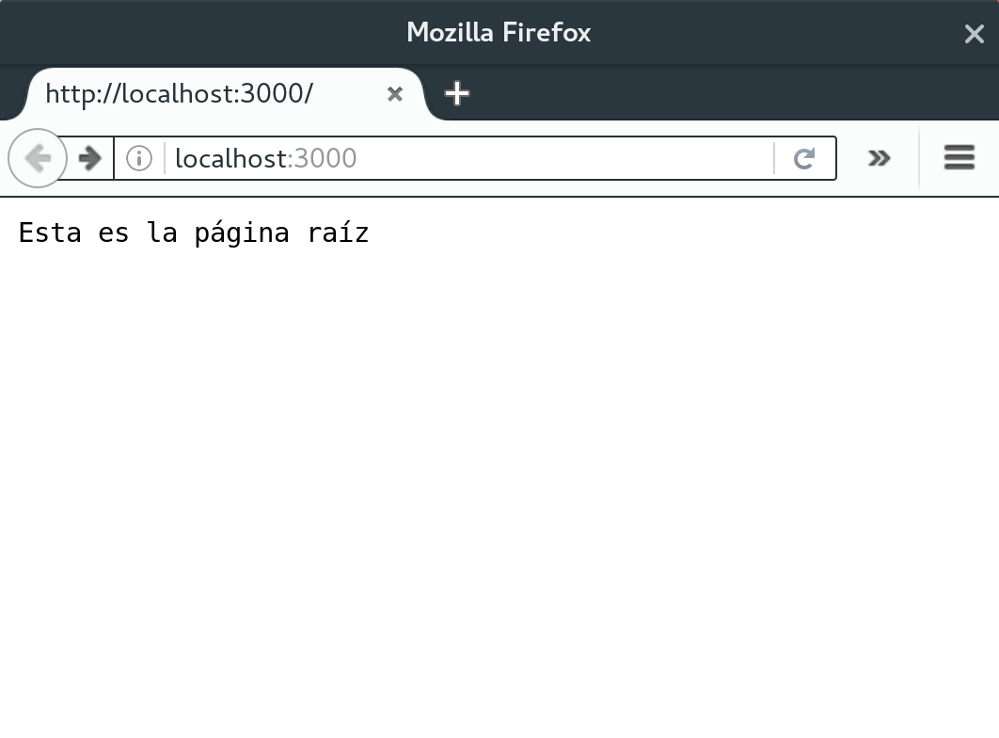
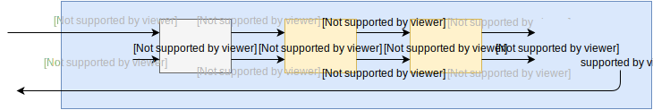
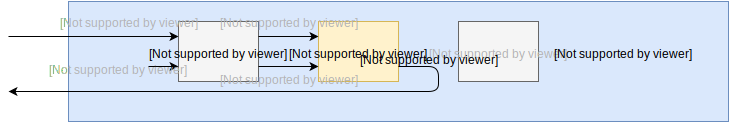
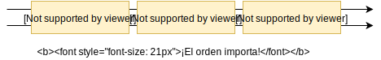
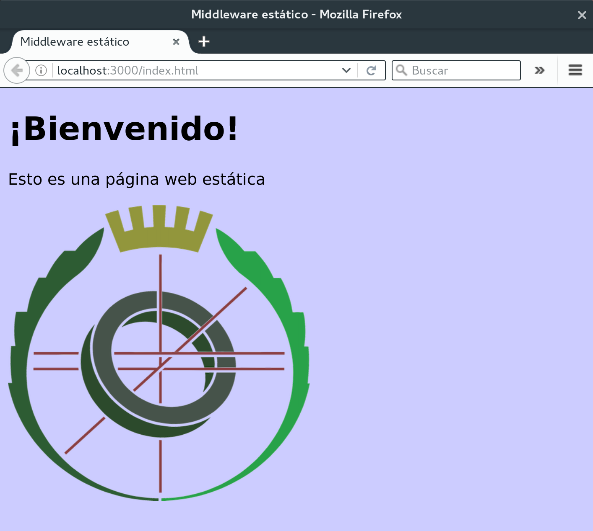
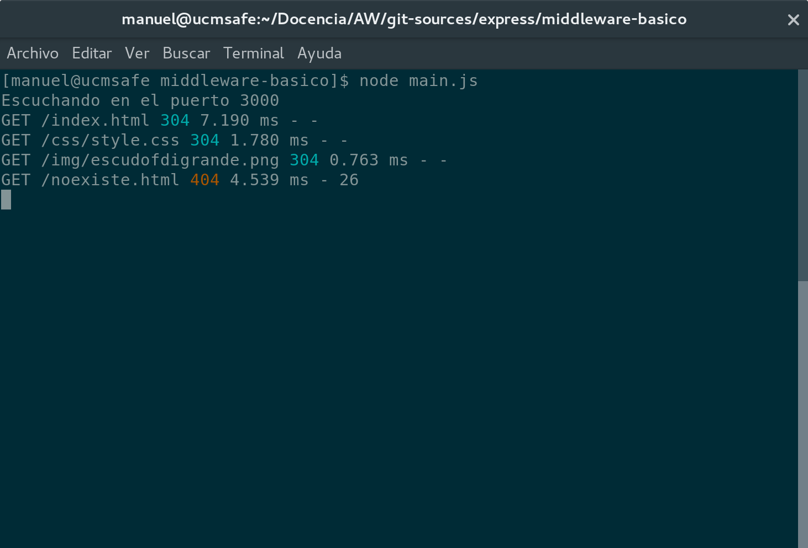

Frameworks en el lado del servidor: Express.js

Introducción
Hemos visto el módulo http, que implementa la funcionalidad de un servidor web.
La función callback realiza una distinción de casos en función de la URL especificada por el cliente en su petición.
var servidor = http.createServer(function(request, response) {
var method = request.method;
var url = request.url;
if (method === "GET" && url === "/index.html") {
// Servir página principal.
} else if (method === "GET" && url === "/index.css") {
// Servir hoja de estilo.
} else if (...) {
// ...
// ...
// ...
} else {
response.statusCode = 404;
}
});
Desventaja: escasa mantenibilidad del código.
Existen, además, otros problemas en el desarrollo de un servidor web para los que el módulo http resulta insuficiente en una aplicación web grande:
- Manejo de cookies
- Validación de formularios
- Gestión de páginas web estáticas
- Registro de peticiones (
logging) - Gestión de las vistas de una aplicación (templates)
Frameworks web
Un marco de aplicaciones web (web framework) es un sistema, generalmente en forma de librería, que facilita el desarrollo de aplicaciones web mediante:
- Separación entre la vista y controlador.
- Vista: documento HTML generado o plantilla EJS.
- Controlador: función callback que procesa las peticiones.
- División de un controlador monolítico en distintos mini-controladores, cada uno mantenible por separado.
- Abstracción de aspectos complejos: envío de ficheros, cookies, etc.
Ejemplos de Frameworks Web
- Java: Apache Struts, Spring MVC, Spark, etc.
- Python: Django.
- Ruby: Ruby on Rails.
- Node:
- Express.js - http://expressjs.com
- Sails.js - http://sailsjs.org
- Meteor.js - http://www.meteor.com
Express.js
Es un framework basado en el módulo http que proporciona:
- Posibilidad de dividir la función callback que gestiona las peticiones HTTP en varias fases.
- Mecanismos de alto nivel para acceder a algunas componentes de la petición (cookies, IP del cliente, etc).
Principales características:
- Flexible: no impone una determinada estructura.
- Modular: basado en concatenar middleware.
- Minimalista: solo proporciona funcionalidad básica, que puede extenderse mediante librerías externas.
El minimalismo de Express.js responde a la filosofía UNIX:
Write programs that do one thing and do it well.
Es raro el uso de Express.js sin ninguna librería adicional.
Ventajas
- Eficiencia: no hay componentes innecesarios.
- Simplicidad: es fácil comprender el funcionamiento.
- Flexibilidad: componentes intercambiables.
Inconvenientes
- Cantidad abrumadora de componentes externos.
- Requiere tomar decisiones de diseño.
Primera aplicación en Express
Creamos un proyecto nuevo y añadimos express como dependencia:
# npm init
...
# npm install express --save
Escribimos un programa main.js que comienza del siguiente modo:
// main.js
// -------
"use strict";
var express = require("express");
var app = express();
// ...
El módulo express exporta una única función.
Cada llamada a esta función devuelve una aplicación. Una aplicación es un servidor HTTP que puede escuchar en un determinado puerto.
A continuación se definen las rutas, que se encargan de manejar cada URL.
app.get(URL, callback)
Cuando se reciba una petición de tipo GET sobre la URL pasada como parámetro, se llamará a la función callback, que será la que gestione la petición.
app.get("/", function(request, response) {
response.status(200);
response.write("Esta es la página raíz");
response.end();
});
Los objetos request y response son del mismo tipo que los del módulo http, pero con algunos métodos más. [+]
response.status(codigo)
Especifica el código HTTP de respuesta.response.set(clave, valor)
Modifica las cabeceras de la respuesta.response.write(cadena)
Escribe en el cuerpo de la respuesta.response.end([cadena])
Envía señal de finalización de respuesta.
La ruta anterior podía haberse escrito del siguiente modo:
app.get("/", function(request, response) {
response.status(200);
response.set("Content-Type", "text/plain; charset=utf-8");
response.end("Esta es la página raíz");
});
Es conveniente indicar el tipo MIME de la respuesta (text/plain), para que el navegador web sepa qué hacer con el fichero recibido. [+]
Añadimos otra ruta para gestionar la URL /users.html:
app.get("/users.html", function(request, response) {
response.status(200);
response.set("Content-Type", "text/plain; charset=utf-8");
response.end("Aquí se mostrará la página de usuarios");
});
Por último, se llama al método listen(), que funciona igual que su homólogo en http:
app.listen(3000, function() {
console.log("Servidor arrancado en el puerto 3000");
});
Resultado:
http://localhost:3000/
Respuesta HTTP devuelta:
HTTP/1.1 200 OK response.status(200)
X-Powered-By: Express
Content-Type: text/plain; charset=utf-8 response.set(...)
Date: Tue, 08 Nov 2016 21:07:14 GMT
Connection: keep-alive
Content-Length: 24
Esta es la página raíz response.write(...) / response.end(...)
Comprobamos el funcionamiento de la segunda ruta:
http://localhost:3000/users.html
Mediante la cabecera Content-Disposition podemos indicar al navegador que el contenido es para ser descargado, no para ser visualizado en él.
app.get("/users.html", function(request, response) {
// ...
response.set("Content-Disposition", "attachment");
// ...
});
Contenido HTML
Al igual que en el módulo http, el objeto response puede (y suele) utilizarse para generar páginas HTML.
var usuarios = ["Javier Montoro", "Dolores Vega", "Beatriz Nito"];
app.get("/users.html", function(request, response) {
response.status(200);
response.set("Content-Type", "text/html");
response.write("<html>");
response.write("<head>");
response.write("<title>Lista de usuarios</title>");
response.write('<meta charset="utf-8">')
response.write("</head>");
response.write("<body><ul>");
usuarios.forEach(function(usuario) {
response.write(`<li>${usuario}</li>`);
});
response.write("</ul></body>");
response.end("</html>");
});
http://localhost:3000/users.html
Uso de plantillas EJS
Al igual que con el módulo http, la generación de código HTML resulta más sencilla utilizando un motor de plantillas.
Express.js soporta varios: Jade, Mustache, EJS, etc.
Para utilizar EJS es necesario configurar previamente el objeto aplicación mediante el método set().
Es necesario indicar:
- El motor de plantillas a utilizar: opción
view engine. - El directorio con las plantillas: opción
views.
var path = require("path");
var express = require("express");
var app = express();
Utilizamos EJS como motor de plantillas:
app.set("view engine", "ejs");
El directorio con las plantillas se llamará views y estará
situado debajo del directorio el el que se encuentra el fichero actual:
app.set("views", path.join(__dirname, "views"));
// Recuerda: __dirname = Directorio del script actual
// path.join(dir1, dir2, ...) = "dir1/dir2/..."
Fichero views/users.ejs
<!DOCTYPE html>
<html>
<head>
<title>Lista de usuarios</title>
<meta charset="utf-8">
</head>
<body>
<ul>
<% users.forEach(function(user) { %>
<li><%= user %></li>
<% }); %>
</ul>
</body>
</html>
La llamada response.render() se encarga de llamar al motor de plantillas y enviar el resultado.
Recibe dos parámetros:
- Una cadena con el nombre de la vista. Buscará el fichero correspondiente en la carpeta de plantillas.
- El modelo a visualizar.
var usuarios = ["Javier Montoro", "Dolores Vega", "Beatriz Nito"];
app.get("/users.html", function(request, response) {
response.status(200);
response.render("users", { users: usuarios });
// Busca la plantilla "views/users.ejs"
// La variable 'users' que hay dentro de esta plantilla, tomará
// el valor del array usuarios.
});
Redirecciones HTTP
Se envían mediante response.redirect(url):
app.get("/usuarios.html", function(request, response) {
response.redirect("/users.html");
});
Al acceder a http://localhost:3000/usuarios.html se obtendrá la siguiente respuesta HTTP,
HTTP/1.1 302 Found Código 302 ⇒ Redirección
X-Powered-By: Express
Location: /users.html
...
y el navegador «saltará» automáticamente a users.html.
Aplicación final
var path = require("path");
var express = require("express");
var app = express();
app.set("view engine", "ejs");
app.set("views", path.join(__dirname, "views"));
app.get("/", function(request, response) {
response.status(200);
response.set("Content-Type", "text/plain; charset=utf-8");
response.end("Esta es la página raíz");
});
// ... continúa ...
// ... viene de la anterior ...
var usuarios = ["Javier Montoro", "Dolores Vega", "Beatriz Nito"];
app.get("/users.html", function(request, response) {
response.status(200);
response.render("users", { users: usuarios });
});
app.get("/usuarios.html", function(request, response) {
response.redirect("/users.html");
});
app.listen(3000, function() {
console.log("Servidor arrancado en el puerto 3000");
});
Fundamentos de Express.js
El framework se basa en tres componentes:
- Middleware
- Rutas
- Subaplicaciones (routers)
Middleware
Recordemos el manejo de peticiones utilizando directamente el módulo http:
var server = http.createServer(function(request, response) {...});
Se gestionan las peticiones mediante una única función monolítica que manipula el argumento response para indicar qué respuesta se quiere enviar:
Express.js se basa en dividir esta función monolítica en varias fases:

Cada una de estas fases recibe el nombre de middleware.
Un middleware recibe un objeto request con los datos de la petición y un objeto response con la respuesta acumulada hasta el momento. Durante su ejecución puede:
- Leer y/o modificar el objeto
request(por ejemplo, añadiendo nuevos atributos). - Leer y/o modificar el objeto
response(por ejemplo, para añadir un fragmento a la respuesta).
La ejecución de un middleware puede finalizar de tres formas distintas:
- Pasando el control al siguiente middleware en la cadena.
- Finalizando la cadena de middlewares, sin pasar el control al siguiente.
- Provocando un error, que será gestionado por otro middleware.
Pasamos a analizar los dos primeros casos.
El último se describirá más adelante.
Caso 1: Pasar el control al siguiente middleware
El middleware «destino» recibirá los objetos request y response tal y como el middleware «origen» los dejó al finalizar su ejecución.
Caso 2: Finalizar la cadena
Si un middleware decide no invocar al siguiente, la cadena finalizará y la petición se dará por atendida.
En este caso, el middleware deberá haber llamado a response.end() o response.redirect()para devolver una respuesta al cliente.
La programación de un servidor con Express.js consiste fundamentalmente en encadenar middlewares.
Si app representa un objeto aplicación, el método app.use(...) añade un middleware a la cadena.
var express = require("express");
var app = express();
app.use(middleware_1); 
app.use(middleware_2);
app.use(middleware_3);
// ...
app.listen(3000);
Construir un middleware
Un middleware es, básicamente, una función con tres parámetros: request, response y next.
El parámetro next es una función. Cuando el middleware quiera transferir el control al siguiente de la cadena deberá llamar a next() sin parámetros.
var middleware_1 = function (request, response, next) {
// ...
// Manipular los objetos request y/o response.
// ...
next(); // Saltar al siguiente middleware
}
Ejemplo 1: registro de peticiones (log)
Creamos un middleware que se limita a mostrar por pantalla las peticiones recibidas sin alterarlas.
Este tipo de middleware suele ir al principio de la cadena.
function logger(request, response, next) {
console.log(`Recibida petición ${request.method} ` +
`en ${request.url} de ${request.ip}`);
// Saltar al siguiente middleware
next();
}
app.use(logger);
Otra forma: introducir la definición de función en la propia llamada a app.use().
app.use(function (request, response, next) {
console.log(`Recibida petición ${request.method} ` +
`en ${request.url} de ${request.ip}`);
next();
});
Ejemplo 2: control de acceso
El siguiente middleware deniega todas las peticiones que provengan de una IP censurada.
var ipsCensuradas = [ "147.96.81.244", "145.2.34.23" ];
app.use(function(request, response, next) {
// Comprobamos si la IP de la petición está dentro de la
// lista de IPs censuradas.
if (ipsCensuradas.indexOf(request.ip) >= 0) {
// Si está censurada, devolvemos código 401 (Unauthorized)
response.status(401);
response.end("No autorizado");
} else {
// En caso contrario, pasamos al siguiente middleware.
next();
}
});
También puede utilizarse middleware para comprobar si el usuario está identificado y, en caso contrario, redirigir a una página de identificación.
app.use(function(request, response, next) {
if (usuarioActual === undefined) {
response.redirect("/login.html");
} else {
next();
}
});
Ejemplo 3: adjuntar información a la petición
El siguiente middleware extiende la petición con un atributo esUCM que indica si la IP del usuario es de la forma 147.96.x.x
app.use(function(request, response, next)) {
request.esUCM = request.ip.startsWith("147.96.");
next();
});
Colocamos tres middlewares anteriores en secuencia, seguidos de un manejador para la ruta /index.html:
var express = require("express");
var app = express();
var ipsBloqueadas = [ ... ];
app.use( ... /* logger */ ...);
app.use( ... /* ip bloqueada? */ ...);
app.use( ... /* ip ucm? */ ...);
app.get("/index.html", function(request, response) {
response.status(200);
response.set("Content-Type", "text/plain; encoding=utf-8");
response.write("¡Hola!");
if (request.esUCM) {
reponse.write("Estás conectado desde la UCM");
}
response.end();
});
Hasta ahora tenemos la siguiente cadena:
Ejemplo 4: Error 404 (Not found)
Al final de la cadena suele colocarse un middleware que gestiona los casos en los que la URL no haya sido capturada por ningún manejador, para devolver el código de error 404.
app.use(function(request, response, next) {
response.status(404);
response.render("error", { url: request.url });
});
views/error.ejs
<html>
<head>
<title>ERROR 404</title>
<meta charset="UTF-8">
</head>
<body>
<h1>Error 404</h1>
<p>La dirección <code><%= url %></code> no existe</p>
</body>
</html>
Middleware básico
static(viene incluido con Express.js)morgancompress
static: servir ficheros estáticos
Recordatorio: páginas web estáticas y dinámicas
Los recursos estáticos (imágenes, páginas web estáticas, hojas de estilo) suelen almacenarse en una carpeta determinada del proyecto.
Cuando se recibe una petición GET para acceder a alguno de estos recursos estáticos, se lee el fichero correspondiente y se envía su contenido en la respuesta.
El middleware static se encarga de ello.
express.static(root)
Recibe un nombre de directorio root y devuelve el siguiente middleware que realiza (a grandes rasgos) lo siguiente:
- Analiza
request.urly comprueba si existe un fichero en el directoriorootque coincida con la URL de la petición. - En caso de existir, lee el fichero y responde con su contenido.
- En caso de no existir, pasar al siguiente middleware.
Ejemplo de uso
Los recursos estáticos suelen almacenarse en un directorio llamado public, que se sitúa dentro del proyecto.
public/index.html
<!DOCTYPE html>
<html>
<head>
<title>Middleware estático</title>
<link rel="stylesheet" href="css/style.css">
<meta charset="utf-8">
</head>
<body>
<h1>¡Bienvenido!</h1>
<p>Esto es una página web estática</p>
<img src="img/escudofdigrande.png"
width="300">
</body>
</html>
main.js
"use strict";
var express = require("express");
var path = require("path");
var app = express();
// La variable ficherosEstaticos guarda el
// nombre del directorio donde se encuentran
// los ficheros estáticos:
// <directorioProyecto>/public
var ficherosEstaticos =
path.join(__dirname, "public");
app.use(express.static(ficherosEstaticos));
app.listen(3000, function() {
console.log("Escuchando en el puerto 3000");
})
Resultado:
morgan: registro de peticiones
Anteriormente hemos implementado un middleware sencillo que escribía por pantalla las peticiones recibidas.
El middleware morgan permite hacer lo mismo, pero proporciona muchas más opciones.
Instalación en el proyecto:
npm install morgan --save
El módulo morgan exporta una única función que recibe el tipo de información a imprimir y devuelve un middleware.
var morgan = require("morgan");
...
app.use(morgan("dev"));
Tipos disponibles: dev, combined, common, short, tiny.
Al realizar distintas peticiones con el navegador se imprime esta información por pantalla:
Manejo de errores
Recordemos cómo puede finalizar un middleware:
- Pasando el control al siguiente middleware en la cadena.
- Finalizando la cadena de middlewares, sin pasar el control al siguiente.
- Provocando un error, que será gestionado por otro middleware.
Pasamos a describir este último caso.
Dentro de la cadena de middlewares podemos incorporar algunos middleware especiales que se encargan de gestionar los errores producidos.
Este tipo de middleware se caracteriza por recibir cuatro parámetros, en lugar de tres:
function(error, request, response, next) { ... }
El primer parámetro contiene información sobre el error producido.
Cuando un middleware llama a su función next pasándole un argumento, el control pasa directamente al primer manejador de errores disponible en la cadena, «saltándose» los middlewares intermedios.
El argumento pasado a next será el objeto Error recibido por el manejador de errores (i.e. el primer parámetro).
A su vez, el manejador de error puede pasar el control al siguiente manejador de error de la cadena. Para ello ha de llamar a su función next() con el mismo objeto error recibido, o con otro distinto.
Ejemplo
var express = require("express");
var path = require("path");
var fs = require("fs");
var app = express();
app.set("view engine", "ejs");
app.set("views", path.join(__dirname, "views"));
app.get("/usuarios", function(request, response, next) {
fs.readFile("noexiste.txt", function(err, contenido) {
if (err) {
next(err); Saltar al manejador de error
} else {
request.contenido = contenido;
}
});
});
// ... continúa ...
// Manejador del error
app.use(function(error, request, response, next) {
// Código 500: Internal server error
response.status(500);
response.render("error", {
mensaje: error.message,
pila: error.stack
});
});
app.listen(3000, function() {
.. console.log("Escuchando en el puerto 3000");
});
views/error.ejs
<!DOCTYPE html>
<html>
<head>
<title>Error del servidor</title>
<meta charset="UTF-8">
</head>
<body>
<h1>500 - Error interno del servidor</h1>
<p>Se ha producido el siguiente error: <%= mensaje %></p>
<p>Pila de ejecución:</p>
<pre><%= pila %></pre>
</body>
</html>
Direccionamiento y rutas
El direccionamiento de Express.js permite asociar una acción a una ruta determinada.
app.get("/users", function(request, response) {
// Acciones a realizar cuando se realice una petición
// de tipo GET sobre la URL /users.
});
Existen funciones para los demás tipos de peticiones HTTP:
app.post()app.put()app.delete()
app.options()app.head()- etc.
Ejemplo:
app.post("/nuevo_usuario", function(request, response) {
// Se ha realizado una petición de tipo POST
// sobre la URL /nuevo_usuario
});
app.put("/modificar_usuario", function(request, response) {
// Se ha realizado una petición de tipo PUT
// sobre la URL /modificar_usuario
});
Rutas paramétricas
Es posible especificar marcadores dentro de una ruta.
De este modo, la ruta se convierte en una plantilla a la que pueden ajustarse distintas rutas:
Por ejemplo: /usuarios/:id
Esta plantilla comprende las siguientes rutas:
/usuarios/34/usuarios/pep/usuarios/43pep/usuarios/gerardo-hernandez
Podemos acceder a los valores concretos de la ruta paramétrica mediante el objeto request.params.
app.get("/usuarios/:id", function(request, response) {
response.status(400);
response.render("usuario", { ident: request.params.id });
});
views/usuario.ejs
<!DOCTYPE html>
<html>
<head>
<title>Saludo</title>
<meta charset="utf-8">
</head>
<body>
<h1>¡Bienvenido, <%= ident %>!</h1>
</body>
</html>
Otros ejemplos de rutas paramétricas:
/usuarios/:id/perfil
/usuarios/:id/editar_perfil.html
/libros/:idAutor/:libro
Express.js utiliza el módulo path-to-regexp para analizar y capturar sus rutas. Este módulo permite especificar expresiones regulares en las rutas. Más información:
Middleware específico de ruta
Es posible incluir una secuencia de middlewares específicos para una determinada ruta.
app.get(ruta, middleware_1, middleware_2, ..., manejador);
app.post(ruta, middleware_1, middleware_2, ..., manejador);
...
Estos middlewares solamente se tendrán en cuenta cuando la petición ajuste con la ruta.
El middleware específico resulta útil para aquellas rutas que requieren pasos previos (por ejemplo, autenticación):
function identificacionRequerida(request, response, next) {
if (usuario_identificado) {
next();
} else {
response.status(401);
response.end();
}
}
app.get("/secreto.html", identificacionRequerida,
function(request, response) { ... } );
app.get("/otro_secreto.html", identificacionRequerida,
function(request, response) { ... } );
app.get("/publico.html", function(request, response) { ... } );
Subaplicaciones (routers)
Un router puede considerarse como una mini-aplicación web con sus propias rutas y su propia cadena de middleware.
Los routers se crean mediante express.Router()
El router creado tiene los métodos use(), get(), post(), etc, que permiten incorporar middleware y manejo de rutas en la subaplicación.
Módulo: miRouter.js
var miRouter = express.Router();
miRouter.get("/crear_usuario.html", function(request, response) {
console.log("Creando usuario.");
response.end();
});
miRouter.get("/buscar_usuario.html", function(request, response) {
console.log("Buscando usuario");
response.end();
});
module.exports = miRouter;
Es posible incorporar un router en otra aplicación indicando la ruta sobre la que se quiere montar:
app.use(ruta, router)
var app = express();
var miRouter = require("./miRouter");
app.use("/usuarios", miRouter); Montar sobre la ruta /usuarios
En este caso, las rutas definidas en el router estarán accesible a través de las siguientes URLs:
http://localhost:3000/usuarios/crear_usuario.html
http://localhost:3000/usuarios/buscar_usuario.html